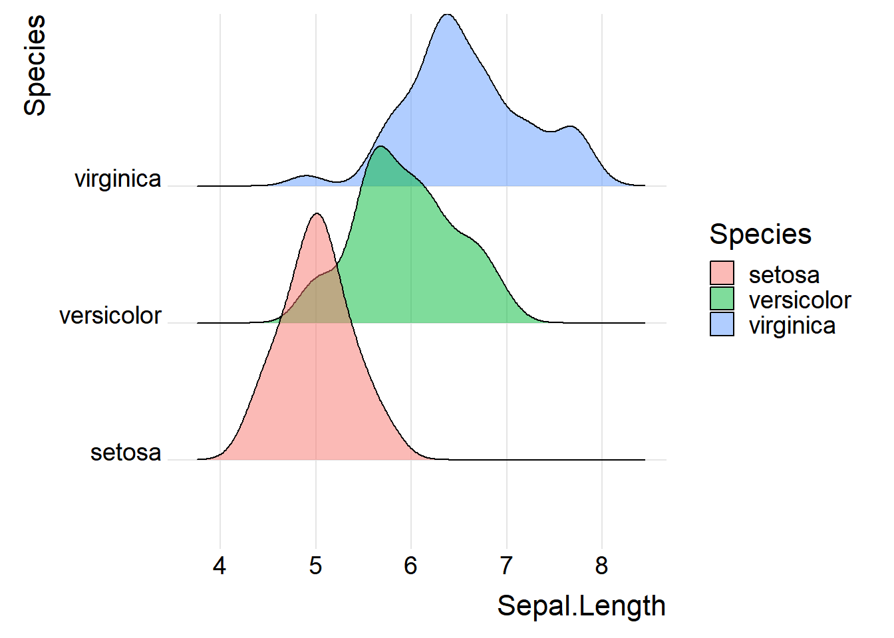
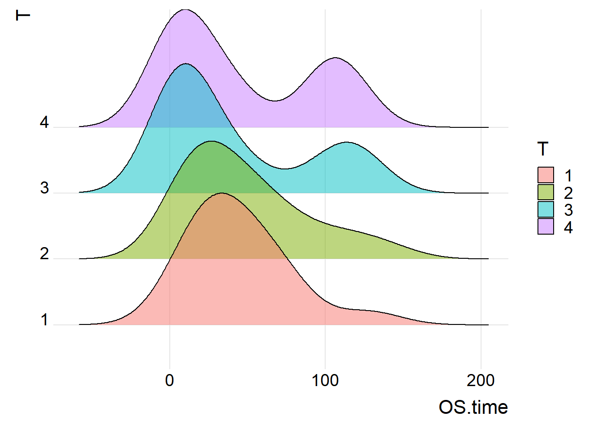
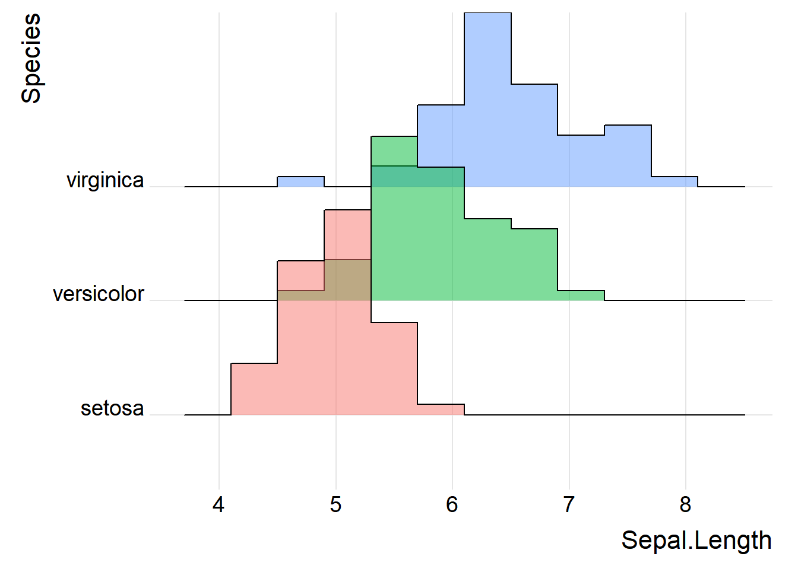
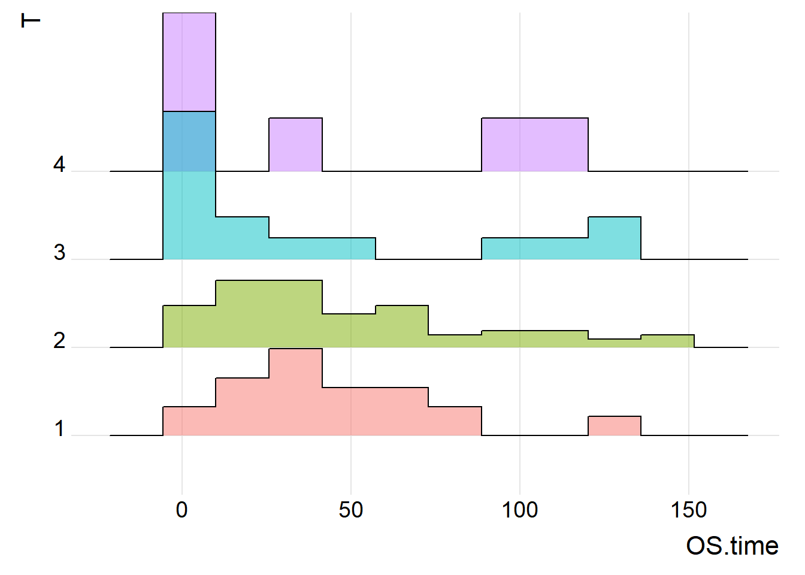
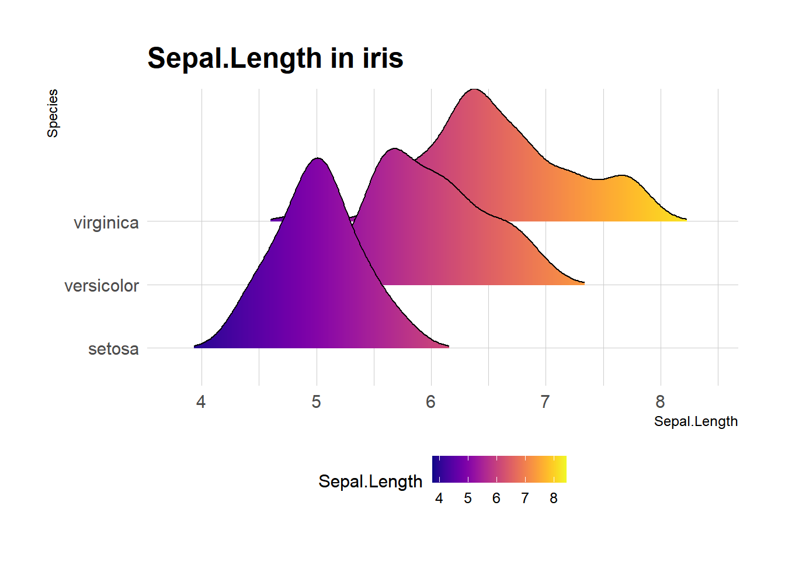
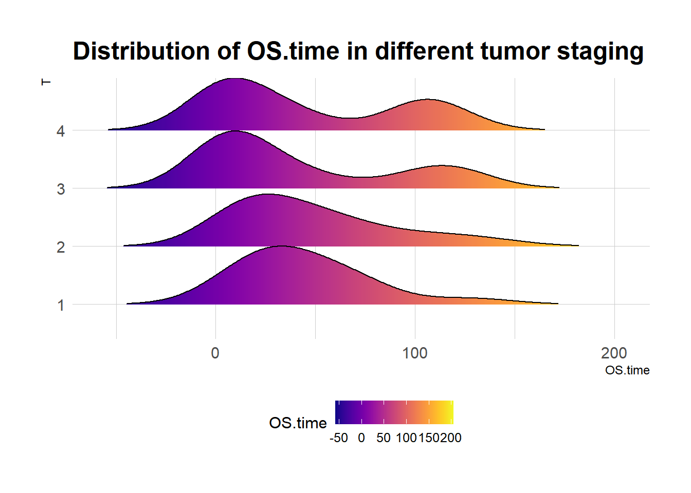

# 安装包
if (!requireNamespace("readr", quietly = TRUE)) {
install.packages("readr")
}
if (!requireNamespace("ggplot2", quietly = TRUE)) {
install.packages("ggplot2")
}
if (!requireNamespace("ggridges", quietly = TRUE)) {
install.packages("ggridges")
}
if (!requireNamespace("hrbrthemes", quietly = TRUE)) {
install.packages("hrbrthemes")
}
if (!requireNamespace("viridis", quietly = TRUE)) {
install.packages("viridis")
}
# 加载包
library(readr) # 用于读取 TSV 文件
library(dplyr) # 用于数据操作
library(ggplot2) # 用于创建图
library(ggridges) # 用于绘制山脊线图
library(hrbrthemes) # 用于增强的 ggplot2 主题
library(viridis) # 用于颜色映射山脊线图
山脊线图，也称为喜悦图，可视化了多个数值变量在不同类别中的分布。此方法可用于比较密度分布，同时保留趋势和变化的整体视图。
示例

一个山脊线图表示数值变量在多个组中的分布。在本例中，该图显示了不同品质类别的钻石价格分布。x 轴表示价格值，而密度曲线则表示每个价格在每个品质组中出现的频率。
环境配置
系统要求： 跨平台（Linux/MacOS/Windows）
编程语言：R
依赖包：
readr,ggplot2,ggridges,viridis,hrbrthemes
sessioninfo::session_info("attached")Warning in system2("quarto", "-V", stdout = TRUE, env = paste0("TMPDIR=", :
running command '"quarto"
TMPDIR=C:/Users/97539/AppData/Local/Temp/RtmpigOGC0/file3bdc17134e3c -V' had
status 1─ Session info ───────────────────────────────────────────────────────────────
setting value
version R version 4.5.1 (2025-06-13 ucrt)
os Windows 11 x64 (build 22631)
system x86_64, mingw32
ui RTerm
language (EN)
collate Chinese (Simplified)_China.utf8
ctype Chinese (Simplified)_China.utf8
tz Asia/Shanghai
date 2026-05-10
pandoc 3.9.0.2 @ D:/Program/PANDOC~1.2/ (via rmarkdown)
quarto NA @ D:\\Program Files\\R\\RStudio\\RESOUR~1\\app\\bin\\quarto\\bin\\quarto.exe
─ Packages ───────────────────────────────────────────────────────────────────
package * version date (UTC) lib source
dplyr * 1.2.1 2026-04-03 [1] CRAN (R 4.5.1)
ggplot2 * 4.0.2 2026-02-03 [1] CRAN (R 4.5.2)
ggridges * 0.5.7 2025-08-27 [1] CRAN (R 4.4.3)
hrbrthemes * 0.8.7 2024-03-04 [1] CRAN (R 4.4.3)
readr * 2.2.0 2026-02-19 [1] CRAN (R 4.5.3)
viridis * 0.6.5 2024-01-29 [1] CRAN (R 4.4.2)
viridisLite * 0.4.3 2026-02-04 [1] CRAN (R 4.5.3)
[1] D:/Program Files/R/R-4.5.1/library
* ── Packages attached to the search path.
──────────────────────────────────────────────────────────────────────────────数据准备
以下是使用内置 R 数据集（iris）和来自 UCSC Xena DATASETS 的Lung Cancer (Raponi 2006)数据集的简短教程。
# 加载 iris 数据集
data("iris")
# 加载 Lung Cancer (Raponi 2006) 临床数据集
TCGA_clinic <- readr::read_tsv("https://ucsc-public-main-xena-hub.s3.us-east-1.amazonaws.com/download/raponi2006_public%2Fraponi2006_public_clinicalMatrix.gz") %>%
mutate(T = as.factor(T))
head(TCGA_clinic)# A tibble: 6 × 16
sampleID Age Differentiation Gender Histology M N Race
<chr> <dbl> <chr> <chr> <chr> <dbl> <dbl> <chr>
1 LS-1 75 mod_poor M SCC 0 0 w
2 LS-10 61 poor F SCC 0 0 w
3 LS-100 72 mod M SCC 0 0 w
4 LS-101 75 mod M SCC 0 1 w
5 LS-102 76 mod F SCC 0 0 w
6 LS-103 58 well_mod M SCC 0 1 w
# ℹ 8 more variables: Smoking_History_Packyears <dbl>, Stage <chr>,
# OS.time <dbl>, T <fct>, OS <chr>, `_INTEGRATION` <chr>, `_PATIENT` <chr>,
# `_GENOMIC_ID_raponi2006` <chr>可视化
1. 基础山脊线图
图 1 描述了Sepal.Length变量在不同Species上的分布。
# 基础山脊线图
p1_1 <- ggplot(iris, aes(x = Sepal.Length, y = Species, fill = Species)) +
geom_density_ridges(alpha = 0.5) +
theme_ridges(font_size = 16, grid = TRUE) +
theme(legend.position = "right")
p1_1
iris 数据集
图 2 描述了OS.time变量在原发肿瘤情况以及存活状态的分布
# 基础山脊线图
p1_2 <- ggplot(TCGA_clinic, aes(x = OS.time, y = T, fill = T)) +
geom_density_ridges(alpha = 0.5, scale = 2) +
theme_ridges(font_size = 16, grid = TRUE) +
theme(legend.position = "right")
p1_2
Lung Cancer (Raponi 2006) 数据集
提示
关键函数: geom_density_ridges() / theme_ridges()
geom_density_ridges()
geom_density_ridges 是一个非常灵活的函数，可用于创建多种样式的山脊线图。
以下是 geom_density_ridges 的一些常用参数和选项：
alpha:geom_density_ridgescolour: 设置线条颜色。fill: 根据分类变量填充颜色。scale: 控制脊线之间的重叠程度。
theme_ridges()
theme_ridges 是 ggridges 包提供的主题函数，专门用于美化脊图。
该函数的参数包括：
**
font_size**: 整体字体大小，默认为 14。line_size: 默认线条大小。grid: 如果设置为TRUE（默认值），则会绘制背景网格；如果设置为FALSE，则背景保持空白。
2. 直方山脊线图
直方图山脊图更适合于展示具体的数据分布和计数，而传统山脊图更适合于展示和比较不同类别的分布形状可以用不同的方式来表示密度。例如，使用stat="binline"可以使每个分布呈现出类似直方图的形状。
图 3 描述了Sepal.Length变量在不同Species上的分布
p2_1 <- ggplot(iris, aes(x = Sepal.Length, y = Species, fill = Species)) +
geom_density_ridges(alpha = 0.5, stat = "binline", bins = 10) +
theme_ridges(font_size = 16, grid = TRUE) +
theme(legend.position = "none")
p2_1
iris 数据集
图 4 描述了OS.time变量在原发肿瘤情况以及存活状态的分布。
p2_2 <- ggplot(TCGA_clinic, aes(x = OS.time, y = T, fill = T)) +
geom_density_ridges(alpha = 0.5, stat = "binline", bins = 10) +
theme_ridges(font_size = 16, grid = TRUE) +
theme(legend.position = "none")
p2_2
Lung Cancer (Raponi 2006) 数据集
3. 具有可变颜色的山脊线图
可以设置颜色取决于数字变量而不是分类变量。在实际可视化应用中便于更加直观观测到数据的大小变化。
图 5 描述了Sepal.Length变量在不同Species上的分布
p3_1 <- ggplot(iris, aes(x = Sepal.Length, y = Species, fill = ..x..)) + # 创建山脊图
geom_density_ridges_gradient(scale = 3, rel_min_height = 0.01) + # 调整参数
scale_fill_viridis(name = "Sepal.Length", option = "C") + # 调整颜色映射
labs(title = 'Sepal.Length in iris') +
theme_ipsum() + # 设置图像主题
theme(legend.position = "bottom",
panel.spacing = unit(0.1, "lines"),
strip.text.x = element_text(size = 8))
p3_1
iris数据集绘制可变颜色的山脊线图
图 6 描述了OS.time变量在原发肿瘤情况以及存活状态的分布。
p3_2 <- ggplot(TCGA_clinic, aes(x = OS.time, y = T, fill = ..x..)) + # 创建山脊图
geom_density_ridges_gradient(scale = 1, rel_min_height = 0.01) + # 调整参数
scale_fill_viridis(name = "OS.time", option = "C") + # 调整颜色映射
labs(title = 'Distribution of OS.time in different tumor staging') +
theme_ipsum() + # 设置图像主题
theme(legend.position = "bottom", panel.spacing = unit(0.1, "lines"),
strip.text.x = element_text(size = 8))
p3_2
Lung Cancer (Raponi 2006)数据集绘制可变颜色的脊线图
提示
关键函数: scale_fill_viridis() / theme_ipsum()
scale_fill_viridis()
scale_fill_viridis()是viridis包中的一个函数，它为连续数据提供了色彩映射方案。
常用参数包括：
beginandend: 控制颜色映射的起始和结束位置，值在 0 到 1 之间。direction: 控制颜色的方向。- 1 表示从低值到高值颜色逐渐变深。
- -1 则相反。
option: 选择viridis包中预设的颜色方案，如 “magma”、“inferno”、“plasma” 等。aesthetics: 指定是用于填充 (fill) 还是用于轮廓 (colour)。
theme_ipsum()
theme_ipsum()是hrbrthemes包中的一个函数，它提供了一个预定义的 ggplot2 主题
以下是一些 hrbrthemes 包中的主题：
theme_ipsum(): 这是hrbrthemes包的核心主题，使用 Arial Narrow 字体，强调了良好的排版和易读性。theme_ft_rc(): 这个主题提供了一种精确且纯净的外观，同样注重排版。theme_ipsum_rc(): 这是theme_ipsum()的变体，可能包含一些不同的排版或颜色选择。theme_ipsum_tw(): 这个主题是为 Twitter 的品牌设计的，使用 Twitter 的颜色和字体风格。theme_ipsum_ps(): 这个主题可能包含了为印刷设计优化的特定排版和颜色。theme_modern_rc(): 这个主题提供了一个现代且简洁的外观，适合当代的数据可视化需求。
应用场景
1. 山脊图分组比较

山脊图被用来展示不同实验条件下的细胞因子表达情况，以及不同细胞群的基因表达分布。 [1]
2. 用山脊图展示基因集富集分析的结果

使用山脊图来展示基因集富集分析的结果，揭示了与Moyamoya疾病相关的生物标志物，这是其中一幅山脊图。 [2]
参考文献
- Krämer B, Nalin AP, Ma F, Eickhoff S, Lutz P, Leonardelli S, Goeser F, Finnemann C, Hack G, Raabe J, ToVinh M, Ahmad S, Hoffmeister C, Kaiser KM, Manekeller S, Branchi V, Bald T, Hölzel M, Hüneburg R, Nischalke HD, Semaan A, Langhans B, Kaczmarek DJ, Benner B, Lordo MR, Kowalski J, Gerhardt A, Timm J, Toma M, Mohr R, Türler A, Charpentier A, van Bremen T, Feldmann G, Sattler A, Kotsch K, Abdallah AT, Strassburg CP, Spengler U, Carson WE 3rd, Mundy-Bosse BL, Pellegrini M, O’Sullivan TE, Freud AG, Nattermann J. Single-cell RNA sequencing identifies a population of human liver-type ILC1s. Cell Rep. 2023 Jan 31;42(1):111937. doi: 10.1016/j.celrep.2022.111937. Epub 2023 Jan 1. PMID: 36640314; PMCID: PMC9950534.
- Xu Y, Chen B, Guo Z, Chen C, Wang C, Zhou H, Zhang C, Feng Y. Identification of diagnostic markers for moyamoya disease by combining bulk RNA-sequencing analysis and machine learning. Sci Rep. 2024 Mar 11;14(1):5931. doi: 10.1038/s41598-024-56367-w. PMID: 38467737; PMCID: PMC10928210.
- Wickham, H. (2009). ggplot2: Elegant Graphics for Data Analysis. Springer-Verlag New York. ISBN 978-0-387-98140-6 (Print) 978-0-387-98141-3 (E-Book). [DOI: 10.1007/978-0-387-98141-3] (https://doi.org/10.1007/978-0-387-98141-3)
- Scherer, C. (2019). ggridges: Ridgeline plots in ‘ggplot2’. Journal of Statistical Software, 88(1), 1-19. [DOI: 10.18637/jss.v088.i01] (https://doi.org/10.18637/jss.v088.i01)
- Garnier, S., Team, R. C., & Team, R. S. (2018). viridis: Default color maps for R. R package version 0.5.1. https://CRAN.R-project.org/package=viridis
- Fournet, H. (2016). hrbrthemes: Additional themes, scales, and geoms for ‘ggplot2’. R package version 1.7.6. https://CRAN.R-project.org/package=hrbrthemes